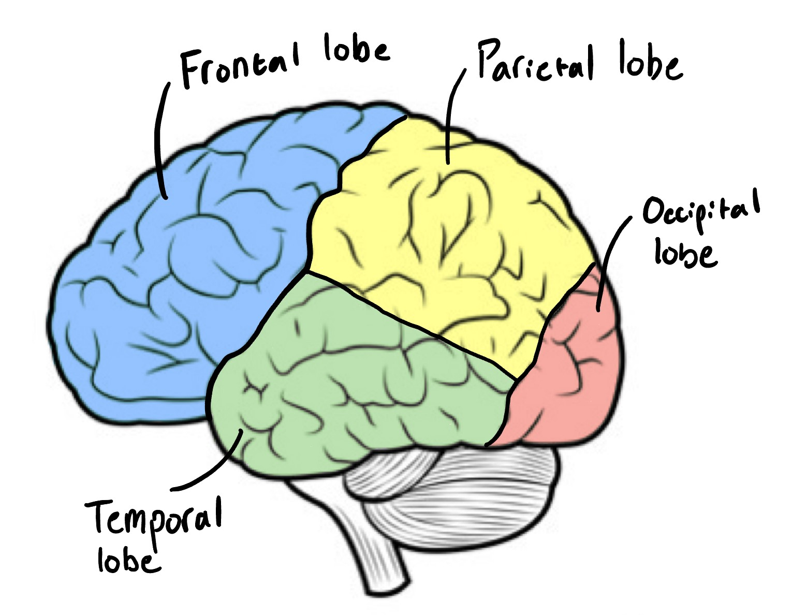
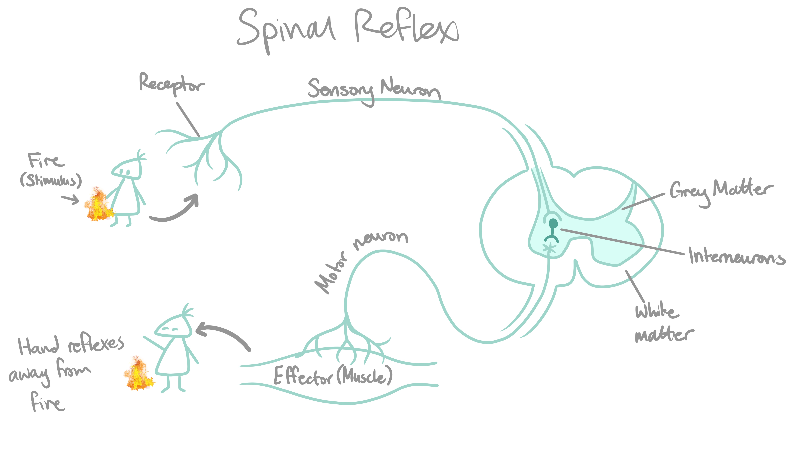
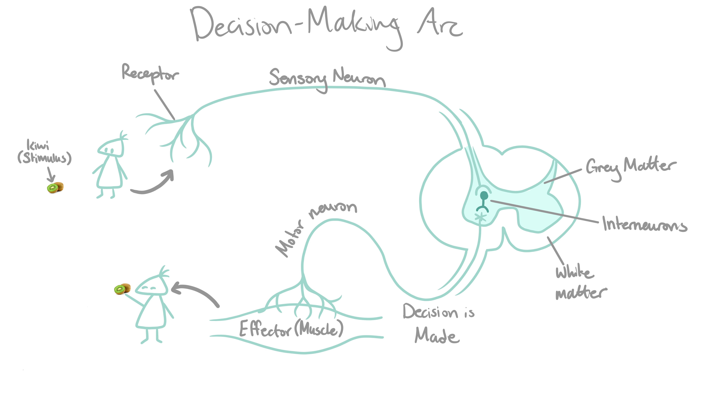

The remains of Hariet Cole, whose nervous system was meticulously dissected and removed from her body to be put on display at Drexel University.
BY LUCA DONAIS
PUBLISHED JUNE 20, 2023
The central nervous system can be considered the processing centre for all the information that your body is constantly collecting. Its job is to gather and aggregate all of that information, throw out what’s useless, and then make decisions and act based on that information. Your central nervous system is made up of your brain and spinal cord.
Your brain is divided up in a whole bunch of ways, all of which are designs to help us understand it better! A simple one is the lobes. These divide the brain into the frontal, parietal, temporal, and occipital lobes, based on general groupings of functions:
- The frontal lobe controls voluntary movement, language, and executive functions;
- The parietal lobe processes the sense of touch and translates other sensory information to a form the rest of your brain can use;
- The temporal lobe processes auditory information and plays a role in encoding memories;
- And the occipital lobe is primarily responsible for visual perception and processing, as well as formation of memories.

Around your brain and spinal cord, including in the area between your brain and skull, is a three-layered protective membrane called the meninges. The role of the meninges is to protect your central nervous system, anchor it to the structures around it, including the skull, and provide a support system for blood and lymph vessels, nerves, and the cerebrospinal fluid to support your nervous system. They act as a shock absorber if anything hits your brain (reducing your risk of receiving a concussion), and anchor your brain to keep it from moving about in your skull. It is possible to receive an infection in your meninges - this is called meningitis, and can be very dangerous. This is one of the reasons why it is required to receive doses of the meningococcal vaccine as a child; meningococcal disease can cause a very dangerous form of bacterial meningitis.
 Your central nervous system is the coordinating centre for nearly all activity that occurs in your body. However, depending on the stimulus, a feedback loop that passes through your central nervous system can take a couple different routes.
Your central nervous system is the coordinating centre for nearly all activity that occurs in your body. However, depending on the stimulus, a feedback loop that passes through your central nervous system can take a couple different routes.
The first passes through your spinal cord and is called a spinal reflex arc. In a spinal reflex arc, the stimulus is directly handled by your spinal cord before being sent to the brain, because it is judged to be imminently dangerous. It is called a reflex arc because you have no conscious control over it. An example of this is touching something hot with your hand - thermoreceptors on a sensory neuron in your hand’s skin will register the heat and send an impulse to your spinal cord through the peripheral (sensory division) nervous system, after which it will enter interneurons in your spinal cord - the control centre of this homeostatic feedback system - which will process that it is potentially dangerous and send an impulse down a motor neuron in your peripheral (motor division) nervous system to the muscles in your arm, the effector organ, causing your hand to jerk away in response. A few milliseconds later, the impulse from your spinal cord will have reached your brain as well, and you will become consciously aware of what’s going on.

The other possible route is through a conscious thought / decision arc. This occurs when a signal is instead referred directly to your brain for a decision to be consciously made, as it is deemed not immediately threatening. Take seeing a delicious kiwi, as an example. Rod and cone cells (sensory neurons) in your eyes will send signals directly to your brain - your eyes are essentially just an extension of your brain - bypassing the spinal cord. Your brain will receive and interpret these signals through interneurons, and you will have to consciously decide what to do about the kiwi. Of course, you will decide to eat the kiwi, so your brain will send nerve impulses through motor neurons to your muscles to allow you to pick up the kiwi, and you will now have a kiwi! Isn’t that just lovely. Go eat a kiwi.

Or do this quiz! Like a nerd would do!